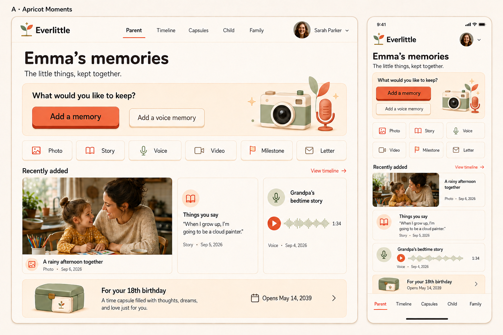

A little softer. A satisfying press.
Eleven detailed boards extend Apricot across Everlittle’s public landing page and existing app features. Choose a screen below, then try the raised buttons. These are design concepts with fictional content.
Parent — capture and recent memories
Open full size ↗
1 of 10 · Generated visual reference. Exact behavior and feature constraints are in the design notes.
Feel the button
A solid terracotta edge gives the coral face its depth. Hover brightens the face; pressing sinks it. The sample below shows the exact proposed colors and mechanics.
Default · hover and press to try
52px face, 16px corners, 5px lower edge.
Hover · frozen preview
Save memoryBrighter coral. No layout movement.
Pressed · frozen preview
Save memoryFace sinks 4px; the edge becomes 1px.
Keyboard focus · preview
Visible forest ring, separated from the button.
Loading · frozen preview
Saving…Stable width and a specific action label.
Disabled
For example, when a required profile is missing.
A complete save interaction
This is a local simulation. Nothing is uploaded or saved.
One clear action at a time
Loading blocks repeat submissions. Errors preserve the draft and offer retry. Success returns to the archive in the real flow.
- Face
- Coral
#E96B50 - Label
- Deep cocoa
#2B211E - Lower edge
- Terracotta
#B64C36 - Secondary
- Ivory face, sand border and edge
- Motion
- Immediate state changes; no animation
Touch gets the pressed feedback without requiring hover. Use Tab and Enter or Space to try keyboard interaction.